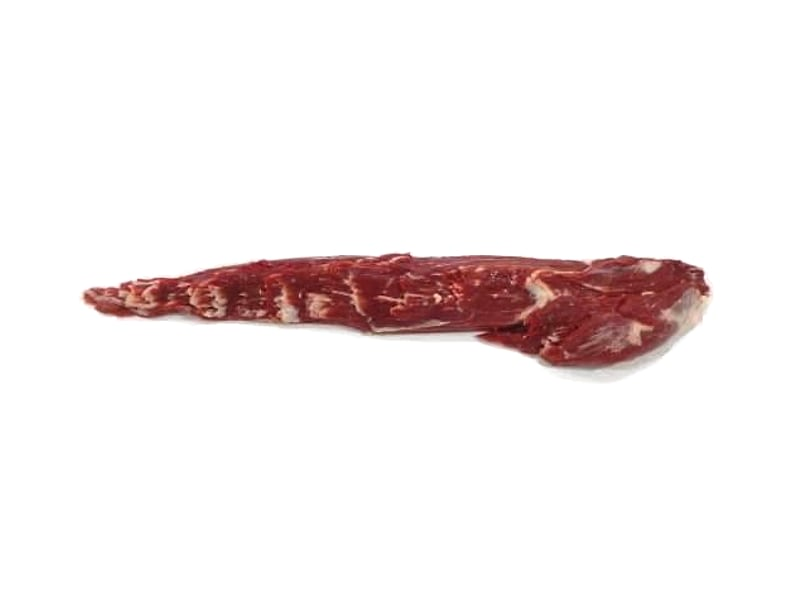

Lomo
Filet
Der zarteste Muskel des Schlachtkörpers, ohne Kette und ohne Haut geliefert, die Innenseite sauber pariert. Für Filetsteaks, Medaillons und ganze Braten.
- Zuschnitt
- Ohne Kette, ohne Haut
- Gewichtsklassen
- 2–3, 3–4 und 4–5 lb je Stück
- Karton
- 14 Stück, vakuumverpackt